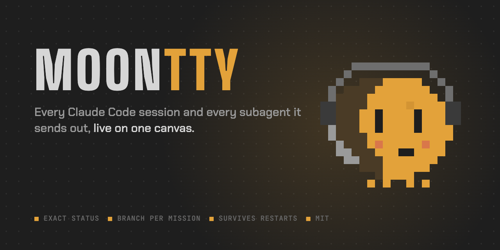

<title>Moontty Brand Book</title>
<link rel="preconnect" href="https://fonts.googleapis.com">
<link rel="preconnect" href="https://fonts.gstatic.com" crossorigin>
<link href="https://fonts.googleapis.com/css2?family=Big+Shoulders+Display:wght@700;800;900&family=Chakra+Petch:wght@400;500;600;700&family=JetBrains+Mono:wght@400;500;700&display=swap" rel="stylesheet">
<style>
/* Layout: the book is laid out on the product's own night canvas. Sections read top to
   bottom like a mission log; specimens sit in sharp mission frames with a title bar and LED. */
:root {
  --night: #1e1e1e;      /* canvas */
  --win: #232323;        /* frames */
  --chrome: #2a2a2a;     /* title bars */
  --line: #363636;       /* borders */
  --dot: #313131;        /* canvas grid */
  --text: #d6d6d6;
  --dim: #9a9a9a;
  --mute: #6a6a6a;
  --amber: #e3a23a;      /* alive */
  --red: #e0566a;        /* needs you */
  --green: #9cc463;      /* done */
  --shadow: #4a3b26;     /* Nox night side */
  --paper: #f4f1ea;      /* light-surface specimen only */
  --ink: #1e1e1e;
  --disp: "Big Shoulders Display", "Arial Narrow", Impact, sans-serif;
  --ui: "Chakra Petch", "Avenir Next", system-ui, sans-serif;
  --mono: "JetBrains Mono", "SF Mono", Menlo, monospace;
  color-scheme: dark;
}
* { box-sizing: border-box; }
body {
  margin: 0; background: var(--night); color: var(--text); font: 16px/1.6 var(--ui);
  background-image: radial-gradient(circle, var(--dot) 1px, transparent 1.4px); background-size: 24px 24px;
}
.wrap { max-width: 1120px; margin: 0 auto; padding-inline: 24px; padding-block: 0 96px; }
img.px { image-rendering: pixelated; display: block; }
h1, h2, h3 { font-family: var(--disp); text-transform: uppercase; letter-spacing: .07em; margin: 0; text-wrap: balance; }
h2 { font-size: clamp(34px, 5vw, 54px); font-weight: 900; line-height: 1; }
h3 { font-size: 22px; font-weight: 800; color: var(--text); }
p { margin: 0; max-width: 64ch; }
.lbl { font: 500 11px var(--mono); letter-spacing: .14em; text-transform: uppercase; color: var(--mute); }
.amber { color: var(--amber); }
code, .mono { font-family: var(--mono); font-size: .9em; }
a { color: var(--amber); }
:focus-visible { outline: 2px solid var(--amber); outline-offset: 2px; }

/* ---------- top bar: the HUD, like the app ---------- */
.hud { position: sticky; top: env(safe-area-inset-top, 0px); z-index: 5; background: rgba(30,30,30,.92); backdrop-filter: blur(6px); border-bottom: 1px solid var(--line); }
.hud .in { max-width: 1120px; margin: 0 auto; padding: 10px 24px; display: flex; align-items: center; gap: 18px; overflow-x: auto; scrollbar-width: none; }
.hud .mark { display: flex; align-items: center; gap: 8px; font: 900 17px var(--disp); letter-spacing: .1em; white-space: nowrap; }
.hud nav { display: flex; gap: 16px; }
.hud nav a { font: 500 11px var(--mono); letter-spacing: .12em; text-transform: uppercase; color: var(--dim); text-decoration: none; white-space: nowrap; }
.hud nav a:hover { color: var(--amber); }

/* ---------- cover ---------- */
.cover { display: grid; grid-template-columns: minmax(0, 1.15fr) minmax(0, .85fr); gap: 40px; align-items: center; padding-block: 72px 56px; }
.cover .word { font: 900 clamp(64px, 12vw, 148px)/.88 var(--disp); letter-spacing: .05em; }
.cover .word b { color: var(--amber); font-weight: 900; }
.cover .tag { margin-top: 22px; font: 600 clamp(22px, 2.6vw, 30px)/1.25 var(--ui); max-width: 22ch; }
.cover .sub { margin-top: 14px; color: var(--dim); font-size: 18px; max-width: 46ch; }
.cover .meta { margin-top: 28px; display: flex; flex-wrap: wrap; gap: 8px 22px; }
.nox-stage { position: relative; aspect-ratio: 1; max-width: 420px; width: 100%; justify-self: center; }
.nox-stage::before { content: ""; position: absolute; inset: -12%; background: radial-gradient(closest-side, rgba(227,162,58,.2), transparent); }
.nox-stage img { position: absolute; inset: 0; width: 100%; height: 100%; }
.nox-stage .shut { opacity: 0; animation: blink 5.2s steps(1) infinite; }
@keyframes blink { 0%, 92%, 96%, 100% { opacity: 0; } 93%, 95% { opacity: 1; } }
@media (prefers-reduced-motion: reduce) { .nox-stage .shut { animation: none; } }

/* ---------- sections ---------- */
section { padding-block: 72px 8px; border-top: 1px solid var(--line); scroll-margin-top: 56px; }
.sh { display: flex; align-items: baseline; gap: 14px; flex-wrap: wrap; margin-bottom: 28px; }
.sh .led { width: 10px; height: 10px; background: var(--amber); box-shadow: 0 0 10px rgba(227,162,58,.6); flex: none; transform: translateY(-4px); }
.lead { font-size: 20px; line-height: 1.5; color: var(--text); max-width: 60ch; }
.cols { display: grid; grid-template-columns: repeat(auto-fit, minmax(min(100%, 300px), 1fr)); gap: 28px; }
.cols > * { min-width: 0; display: flex; flex-direction: column; gap: 10px; }
.stack { display: flex; flex-direction: column; gap: 18px; }

/* mission frame: the one "card" in the system, used for specimens */
.frame { background: var(--win); border: 1px solid var(--line); min-width: 0; }
.frame > .bar { height: 30px; display: flex; align-items: center; gap: 9px; padding: 0 12px; background: var(--chrome); border-bottom: 1px solid var(--line); font: 500 10.5px var(--mono); letter-spacing: .12em; text-transform: uppercase; color: var(--dim); white-space: nowrap; overflow: hidden; }
.frame > .bar i { width: 7px; height: 7px; background: var(--amber); flex: none; }
.frame > .bar i.r { background: var(--red); } .frame > .bar i.g { background: var(--green); } .frame > .bar i.o { background: var(--mute); }
.frame > .bd { padding: 22px; }

/* idea */
.insight { font: 800 clamp(30px, 4.4vw, 48px)/1.06 var(--disp); letter-spacing: .03em; text-transform: none; max-width: 24ch; }
.insight em { font-style: normal; color: var(--red); }
.promise { margin-top: 18px; font-size: 20px; color: var(--dim); }
.promise b { color: var(--amber); font-weight: 600; }
.statement { margin-top: 36px; padding: 22px 24px; border-left: 3px solid var(--amber); background: var(--win); font-size: 18px; line-height: 1.55; max-width: 72ch; }

/* traits */
.trait h3 { color: var(--amber); }
.isnt { color: var(--mute); font-size: 14px; }
.isnt b { color: var(--dim); font-weight: 600; }

/* taglines */
.primary-tag { font: 900 clamp(34px, 6vw, 72px)/.98 var(--disp); text-transform: uppercase; letter-spacing: .04em; }
.alts { display: grid; gap: 0; margin-top: 26px; border-top: 1px solid var(--line); }
.alts div { display: grid; grid-template-columns: 120px minmax(0, 1fr); gap: 16px; padding: 12px 0; border-bottom: 1px solid var(--line); }
.alts span:last-child { font-size: 17px; }

/* logo */
.logo-on { display: flex; align-items: center; gap: 18px; padding: 30px 26px; }
.logo-on .w { font: 900 clamp(40px, 6vw, 64px)/1 var(--disp); letter-spacing: .08em; }
.logo-on .w b { color: var(--amber); font-weight: 900; }
.logo-on.light { background: var(--paper); color: var(--ink); }
.logo-on.light .w b { color: #b97a17; }
.space { position: relative; display: inline-flex; align-items: center; gap: 14px; padding: 28px; outline: 1px dashed var(--amber); outline-offset: -1px; }
.space .w { font: 900 40px/1 var(--disp); letter-spacing: .08em; }
.space .w b { color: var(--amber); }
.dont { display: grid; grid-template-columns: repeat(auto-fit, minmax(min(100%, 200px), 1fr)); gap: 16px; }
.dont .frame .bd { height: 130px; display: grid; place-items: center; overflow: hidden; }
.dont p { font-size: 14px; color: var(--dim); padding: 10px 14px 14px; }
.x1 img { width: 90px; height: 56px; image-rendering: pixelated; }
.x2 img { width: 70px; filter: blur(1.4px); }
.x3 img { width: 70px; filter: hue-rotate(160deg) saturate(1.4); image-rendering: pixelated; }
.x4 div { padding: 14px; border-radius: 22px; background: linear-gradient(135deg, #7b5cff, #3aa0ff); }
.x4 img { width: 56px; image-rendering: pixelated; }

/* nox */
.moods { display: grid; grid-template-columns: repeat(auto-fit, minmax(min(100%, 170px), 1fr)); gap: 16px; }
.mood .bd { display: grid; place-items: center; padding: 18px 14px 10px; }
.mood img { width: 100%; max-width: 160px; height: auto; aspect-ratio: 24 / 16; }
.mood p { padding: 0 14px 16px; font-size: 14px; color: var(--dim); }
.anatomy { display: grid; grid-template-columns: minmax(0, 300px) minmax(0, 1fr); gap: 36px; align-items: center; margin-bottom: 36px; }
.anatomy dl { margin: 0; display: grid; grid-template-columns: 130px minmax(0, 1fr); gap: 12px 18px; }
.anatomy dt { font: 500 11px var(--mono); letter-spacing: .12em; text-transform: uppercase; color: var(--amber); padding-top: 4px; }
.anatomy dd { margin: 0; color: var(--text); }

/* color */
.swatches { display: grid; grid-template-columns: repeat(auto-fit, minmax(min(100%, 160px), 1fr)); gap: 14px; }
.sw .chip { height: 96px; border: 1px solid var(--line); }
.sw .chip.big { height: 140px; }
.sw b { display: block; margin-top: 10px; font: 700 15px var(--ui); }
.sw span { display: block; font: 12px var(--mono); color: var(--dim); }
.sw em { display: block; font-style: normal; font-size: 13px; color: var(--mute); margin-top: 4px; }
.ratio { display: flex; height: 26px; margin-top: 30px; border: 1px solid var(--line); }
.ratio span { display: block; }
.ratio-key { display: flex; flex-wrap: wrap; gap: 8px 22px; margin-top: 10px; }
.rule { margin-top: 30px; display: flex; gap: 16px; align-items: flex-start; }
.rule .led { width: 12px; height: 12px; background: var(--amber); box-shadow: 0 0 12px rgba(227,162,58,.7); flex: none; margin-top: 8px; }
.rule p { font-size: 19px; }

/* type */
.spec { display: grid; grid-template-columns: 170px minmax(0, 1fr); gap: 22px; padding: 26px 0; border-bottom: 1px solid var(--line); align-items: baseline; }
.spec:first-of-type { border-top: 1px solid var(--line); }
.spec .s1 { font: 900 clamp(46px, 7vw, 84px)/.95 var(--disp); text-transform: uppercase; letter-spacing: .06em; }
.spec .s2 { font: 600 clamp(22px, 3vw, 30px)/1.25 var(--ui); }
.spec .s3 { font: 400 15px/1.6 var(--mono); color: var(--dim); }
.spec .s3 b { color: var(--amber); font-weight: 500; }
.scale { display: flex; flex-wrap: wrap; gap: 6px 26px; margin-top: 22px; align-items: baseline; }

/* motifs */
.motif .bd { min-height: 150px; display: grid; place-items: center; }
.leds { display: flex; gap: 18px; flex-wrap: wrap; justify-content: center; }
.leds div { display: flex; flex-direction: column; align-items: center; gap: 8px; font: 10px var(--mono); letter-spacing: .1em; text-transform: uppercase; color: var(--dim); }
.leds i { width: 12px; height: 12px; }
.mini { width: 100%; border: 1px solid var(--line); }
.mini .t { height: 26px; display: flex; align-items: center; gap: 8px; padding: 0 9px; background: var(--chrome); border-bottom: 1px solid var(--line); font: 10px var(--mono); color: var(--mute); white-space: nowrap; overflow: hidden; }
.mini .t b { font: 800 14px var(--disp); letter-spacing: .08em; color: var(--text); }
.mini .t .z { color: var(--amber); font-weight: 700; letter-spacing: .1em; }
.mini .t .br { color: var(--amber); }
.mini .c { padding: 10px; font: 11px/1.5 var(--mono); color: var(--dim); background: var(--win); }
.calls { display: flex; flex-wrap: wrap; gap: 10px 16px; justify-content: center; font: 800 22px var(--disp); letter-spacing: .1em; }
.calls span:nth-child(3n+1) { color: var(--amber); }

/* voice */
.dd { display: grid; grid-template-columns: repeat(auto-fit, minmax(min(100%, 320px), 1fr)); gap: 16px; }
.pair { display: grid; gap: 0; border: 1px solid var(--line); background: var(--win); }
.pair div { padding: 14px 16px; display: grid; grid-template-columns: 54px minmax(0, 1fr); gap: 12px; align-items: baseline; }
.pair div + div { border-top: 1px solid var(--line); }
.pair .y span:first-child { color: var(--green); }
.pair .n span:first-child { color: var(--red); }
.pair .n span:last-child { color: var(--mute); text-decoration: line-through; text-decoration-color: rgba(224,86,106,.5); }
.pair span:first-child { font: 500 10.5px var(--mono); letter-spacing: .14em; }
.pair span:last-child { font: 14px/1.5 var(--mono); }
.gloss { width: 100%; border-collapse: collapse; font-size: 15px; }
.gloss td { padding: 11px 12px; border-bottom: 1px solid var(--line); vertical-align: top; }
.gloss td:first-child { font: 800 17px var(--disp); letter-spacing: .08em; text-transform: uppercase; color: var(--amber); white-space: nowrap; width: 150px; }
.tablewrap { overflow-x: auto; }

/* in use */
.shot { border: 1px solid var(--line); background: var(--win); }
.shot img { display: block; width: 100%; height: auto; }
.shot figcaption { padding: 10px 14px; font-size: 13px; color: var(--dim); border-top: 1px solid var(--line); }
figure { margin: 0; }
.copy { position: relative; }
.copy pre { margin: 0; padding: 16px 18px; white-space: pre-wrap; font: 13.5px/1.6 var(--mono); color: var(--text); }
.copy button { position: absolute; top: 4px; right: 6px; background: none; border: 1px solid var(--line); color: var(--dim); font: 500 10px var(--mono); letter-spacing: .12em; text-transform: uppercase; padding: 4px 8px; cursor: pointer; }
.copy button:hover { color: var(--amber); border-color: var(--amber); }
.topics { display: flex; flex-wrap: wrap; gap: 8px; padding: 16px 18px; }
.topics span { font: 12px var(--mono); padding: 3px 9px; border: 1px solid var(--line); color: var(--dim); }

footer { margin-top: 80px; padding-top: 24px; border-top: 1px solid var(--line); display: flex; justify-content: space-between; flex-wrap: wrap; gap: 12px; color: var(--mute); font-size: 13px; }

@media (max-width: 760px) {
  .cover { grid-template-columns: 1fr; padding-block: 40px 32px; }
  .nox-stage { max-width: 260px; grid-row: 1; }
  .anatomy { grid-template-columns: 1fr; }
  .anatomy dl, .spec, .alts div { grid-template-columns: 1fr; gap: 6px; }
  .gloss td:first-child { width: auto; }
}
</style>

<header class="hud">
  <div class="in">
    <div class="mark">MOON<span class="amber">TTY</span></div>
    <nav aria-label="Sections">
      <a href="#idea">Idea</a><a href="#name">Name</a><a href="#personality">Personality</a><a href="#logo">Logo</a><a href="#nox">Nox</a><a href="#color">Color</a><a href="#type">Type</a><a href="#shape">Shape</a><a href="#voice">Voice</a><a href="#use">In use</a>
    </nav>
  </div>
</header>

<main class="wrap">

  <div class="cover">
    <div>
      <div class="lbl">Brand book · v1 · October 2026</div>
      <div class="word" style="margin-top:14px">MOON<b>TTY</b></div>
      <p class="tag">Keep watch over every agent.</p>
      <p class="sub">Every Claude Code session and every subagent it sends out, live on one canvas.</p>
      <div class="meta">
        <span class="lbl">Open source · MIT</span><span class="lbl">macOS</span><span class="lbl">by nawazxz</span>
      </div>
    </div>
    <div class="nox-stage" role="img" aria-label="Nox, the Moontty mascot, blinking">
      
      
    </div>
  </div>

  <section id="idea">
    <div class="sh"><span class="led"></span><h2>The idea</h2></div>
    <p class="insight">You run five agents. One of them has been <em>waiting twenty minutes</em> for a yes.</p>
    <p class="promise">Moontty keeps watch while your agents work. It shows every one of them, opens up what each is doing, and <b>tells you the moment one needs you.</b></p>
    <div class="statement">
      For developers who run several Claude Code agents at once, Moontty is a live canvas that shows every agent and every subagent it sends out on one live map. Where other tools keep agents in a list of tabs, Moontty lays them out as a canvas, wires each subagent to the agent that sent it, and reads status straight from Claude Code, so nothing sits waiting without you knowing.
    </div>
    <div class="cols" style="margin-top:40px">
      <div><span class="lbl">Who it is for</span><p>Developers who already live in Claude Code and now run three, five or ten sessions side by side. They read diffs, care about git hygiene, and keep a terminal open all day.</p></div>
      <div><span class="lbl">What they feel today</span><p>Tabs they forget to check. A permission prompt that blocked an agent for half an hour. No idea what the subagents are doing until the report lands.</p></div>
      <div><span class="lbl">What Moontty promises</span><p>One glance tells you who is working, who is done and who is waiting on you. Nothing changes about how you use Claude Code; you just stop losing track of it.</p></div>
    </div>
  </section>

  <section id="name">
    <div class="sh"><span class="led"></span><h2>The name</h2></div>
    <div class="cols">
      <div>
        <h3>Moon + tty</h3>
        <p><b class="amber">Moon</b> for the late hours: agents keep working after you look away, and somebody has to keep watch. <b class="amber">tty</b> for the terminal they live in, the oldest word developers have for it.</p>
      </div>
      <div>
        <h3>How to say it</h3>
        <p>"Moon tee tee why." Never "moontee" or "moonty".</p>
      </div>
      <div>
        <h3>How to write it</h3>
        <p><span class="mono">Moontty</span> in sentences. <span class="mono">MOONTTY</span> only in the wordmark. <span class="mono">moontty</span> for the command, package and repo. Never MoonTTY, Moon TTY or MoonTty.</p>
      </div>
    </div>
  </section>

  <section id="personality">
    <div class="sh"><span class="led"></span><h2>Personality</h2></div>
    <p class="lead" style="margin-bottom:30px">Moontty is the colleague who stays up late, has seen everything and stays calm. Serious about the work, a little playful about the hours.</p>
    <div class="cols">
      <div class="trait"><h3>Watchful</h3><p>Notices first and tells you plainly. Every state is visible at a glance.</p><p class="isnt"><b>Not</b> nagging. It flags what needs you and stays quiet about the rest.</p></div>
      <div class="trait"><h3>Calm</h3><p>Low light, low contrast, steady rhythm. Built for long sessions and late nights.</p><p class="isnt"><b>Not</b> flashy. No confetti, no gradients, no exclamation marks in the interface.</p></div>
      <div class="trait"><h3>Precise</h3><p>Says exactly what happened: which agent, which command, which branch, how many files.</p><p class="isnt"><b>Not</b> vague. "Something went wrong" is never an answer.</p></div>
      <div class="trait"><h3>Crew-minded</h3><p>Treats every subagent as part of a team with a name, a role and a report.</p><p class="isnt"><b>Not</b> military cosplay. The ops words help you scan; they never get in the way.</p></div>
    </div>
  </section>

  <section id="taglines">
    <div class="sh"><span class="led"></span><h2>Lines</h2></div>
    <div class="lbl" style="margin-bottom:12px">Primary tagline</div>
    <div class="primary-tag">Keep watch over<br><span class="amber">every agent.</span></div>
    <div class="alts">
      <div><span class="lbl">Descriptor</span><span>Every Claude Code session and every subagent it sends out, live on one canvas.</span></div>
      <div><span class="lbl">One-liner</span><span>A live canvas for all your Claude Code agents.</span></div>
      <div><span class="lbl">Elevator</span><span>Moontty puts every Claude Code agent you run on one canvas, wires in the subagents they send out, and tells you the moment one needs you. Your own terminal, nothing wrapped.</span></div>
      <div><span class="lbl">Sign-off</span><span>Your agents keep working. Moontty keeps watch.</span></div>
    </div>
  </section>

  <section id="logo">
    <div class="sh"><span class="led"></span><h2>Logo</h2></div>
    <p class="lead" style="margin-bottom:28px">The lockup is Nox beside the wordmark. <span class="mono">MOON</span> takes the text color, <span class="mono">TTY</span> is always amber: the terminal is the part that is alive.</p>
    <div class="cols">
      <div class="frame"><div class="bar"><i></i>Primary · on night</div><div class="logo-on"><span class="w">MOON<b>TTY</b></span></div></div>
      <div class="frame"><div class="bar"><i class="o"></i>On light surfaces</div><div class="logo-on light"><span class="w">MOON<b>TTY</b></span></div></div>
    </div>
    <div class="cols" style="margin-top:28px">
      <div>
        <span class="lbl">Clear space</span>
        <p>Keep space equal to the height of Nox's headset band (two Nox pixels at any size) around the lockup. Nothing enters that box.</p>
        <div><span class="space"><span class="w">MOON<b>TTY</b></span></span></div>
      </div>
      <div>
        <span class="lbl">Sizes</span>
        <p>Nox alone works from 16 px (favicon). The full lockup needs at least 120 px of width. Always scale Nox by whole multiples of its 20 px grid: 20, 40, 60, 80.</p>
        <div style="display:flex;align-items:flex-end;gap:18px;flex-wrap:wrap">
          
          
          
        </div>
      </div>
    </div>
    <div class="lbl" style="margin:36px 0 14px">Never</div>
    <div class="dont">
      <div class="frame x1"><div class="bar"><i class="r"></i>Stretch</div><div class="bd"></div><p>Don't change Nox's proportions.</p></div>
      <div class="frame x2"><div class="bar"><i class="r"></i>Smooth</div><div class="bd"></div><p>Don't let it render blurry. Pixels stay crisp.</p></div>
      <div class="frame x3"><div class="bar"><i class="r"></i>Recolor</div><div class="bd"></div><p>Don't shift its colors. Nox is amber.</p></div>
      <div class="frame x4"><div class="bar"><i class="r"></i>Contain</div><div class="bd"><div></div></div><p>No rounded tiles or gradients, except the app icon.</p></div>
    </div>
  </section>

  <section id="nox">
    <div class="sh"><span class="led"></span><h2>Nox</h2><span class="lbl">the mascot</span></div>
    <div class="anatomy">
      <div class="nox-stage" style="max-width:300px"></div>
      <div class="stack">
        <p class="lead">Nox is a pixel moon that keeps watch. It is small, steady and always caught mid-phase. Nox speaks for the app: when a mission changes state, Nox's face changes with it.</p>
        <dl>
          <dt>Night side</dt><dd>The dark crescent on its left is the moon's shadow. It is what makes Nox a moon and not a cookie.</dd>
          <dt>Cursor eyes</dt><dd>Terminal block cursors. They blink like a cursor, about every five seconds.</dd>
          <dt>Headset</dt><dd>On shift, listening for agents. The light on the right earcup shows status.</dd>
          <dt>Legs</dt><dd>Four stubby pixels, so Nox can walk across a canvas.</dd>
        </dl>
      </div>
    </div>
    <div class="lbl" style="margin-bottom:14px">Moods, one for each mission state</div>
    <div class="moods">
      <div class="frame mood"><div class="bar"><i class="o"></i>Standby</div><div class="bd"></div><p>Idle, ready for the next prompt.</p></div>
      <div class="frame mood"><div class="bar"><i></i>On shift</div><div class="bd"></div><p>Working. Eyes on the task, typing dots.</p></div>
      <div class="frame mood"><div class="bar"><i class="r"></i>Needs you</div><div class="bd"></div><p>Waiting on your answer. Red light, red signal.</p></div>
      <div class="frame mood"><div class="bar"><i class="g"></i>Done</div><div class="bd"></div><p>Finished. Happy eyes, green light.</p></div>
      <div class="frame mood"><div class="bar"><i class="o"></i>Offline</div><div class="bd"></div><p>The process ended. Eyes shut.</p></div>
    </div>
    <p style="margin-top:22px;color:var(--dim)">Nox is drawn on a grid in <span class="mono">brand/nox.py</span>. Change the grid, run <span class="mono">brand/render.sh</span>, and every asset updates. Never redraw Nox as smooth vectors.</p>
  </section>

  <section id="color">
    <div class="sh"><span class="led"></span><h2>Color</h2></div>
    <p class="lead" style="margin-bottom:28px">Warm night grays taken from a terminal at 2 a.m., and three signal colors. Low contrast on purpose: Moontty is open for hours.</p>
    <div class="swatches">
      <div class="sw"><div class="chip big" style="background:#1e1e1e"></div><b>Night</b><span>#1E1E1E</span><em>Canvas, page ground</em></div>
      <div class="sw"><div class="chip big" style="background:#232323"></div><b>Frame</b><span>#232323</span><em>Windows, terminals</em></div>
      <div class="sw"><div class="chip big" style="background:#2a2a2a"></div><b>Chrome</b><span>#2A2A2A</span><em>Title bars</em></div>
      <div class="sw"><div class="chip big" style="background:#363636"></div><b>Line</b><span>#363636</span><em>Borders, wires at rest</em></div>
      <div class="sw"><div class="chip big" style="background:#d6d6d6"></div><b>Moonlight</b><span>#D6D6D6</span><em>Main text</em></div>
    </div>
    <div class="swatches" style="margin-top:14px">
      <div class="sw"><div class="chip" style="background:#e3a23a"></div><b>Sodium amber</b><span>#E3A23A</span><em>Alive: working, focus, the brand</em></div>
      <div class="sw"><div class="chip" style="background:#e0566a"></div><b>Signal red</b><span>#E0566A</span><em>Needs you, errors</em></div>
      <div class="sw"><div class="chip" style="background:#9cc463"></div><b>Clear green</b><span>#9CC463</span><em>Done, passing, ports</em></div>
      <div class="sw"><div class="chip" style="background:#4a3b26"></div><b>Night side</b><span>#4A3B26</span><em>Nox's shadow only</em></div>
      <div class="sw"><div class="chip" style="background:#9a9a9a"></div><b>Dim</b><span>#9A9A9A</span><em>Secondary text</em></div>
    </div>
    <div class="ratio" aria-label="Color proportions">
      <span style="flex:68;background:#1e1e1e"></span><span style="flex:14;background:#2a2a2a"></span><span style="flex:10;background:#d6d6d6"></span><span style="flex:6;background:#e3a23a"></span><span style="flex:1.2;background:#e0566a"></span><span style="flex:.8;background:#9cc463"></span>
    </div>
    <div class="ratio-key"><span class="lbl">Night grays ~80%</span><span class="lbl">Moonlight ~10%</span><span class="lbl">Amber ~6%</span><span class="lbl">Red and green, only when they mean something</span></div>
    <div class="rule"><span class="led"></span><p><b>Amber means alive.</b> Use it for things that are working or have focus. If it is decoration, it is not amber.</p></div>
  </section>

  <section id="type">
    <div class="sh"><span class="led"></span><h2>Type</h2></div>
    <div class="spec"><span class="lbl">Display<br>Big Shoulders Display<br>800 to 900, uppercase</span><div class="s1">Nightfall · Redline</div></div>
    <div class="spec"><span class="lbl">Interface<br>Chakra Petch<br>400 to 600</span><div class="s2">Two agents need you. Redline wants to run npm test.</div></div>
    <div class="spec"><span class="lbl">Terminal<br>JetBrains Mono<br>400 to 500</span><div class="s3">acme-web % claude --model haiku<br><b>mt/nightfall</b> · 2 ahead · :4173 · ≈$0.10</div></div>
    <div class="scale"><span class="lbl">Scale</span><span class="lbl">72 display</span><span class="lbl">54 section</span><span class="lbl">22 heading</span><span class="lbl">16 body</span><span class="lbl">12.5 terminal</span><span class="lbl">10.5 label</span></div>
    <p style="margin-top:20px;color:var(--dim)">Display type is for names: mission codenames, call signs, the wordmark. Never set a sentence in it. All three faces are free on Google Fonts.</p>
  </section>

  <section id="shape">
    <div class="sh"><span class="led"></span><h2>Shape &amp; motifs</h2></div>
    <p class="lead" style="margin-bottom:28px">Sharp frames on a dotted grid, square lights and wires. Nothing is rounded. Things that belong together are wired together.</p>
    <div class="cols">
      <div class="frame motif"><div class="bar"><i></i>Mission frame</div><div class="bd">
        <div class="mini"><div class="t"><i style="width:7px;height:7px;background:var(--red)"></i><b>NIGHTFALL</b><span class="z">ZERO</span><span>HAIKU 4.5 · ctx 48K</span><span class="br">mt/nightfall</span></div><div class="c">wants to run: npm test<br>❯ 1. Yes</div></div>
      </div></div>
      <div class="frame motif"><div class="bar"><i></i>Square LEDs</div><div class="bd">
        <div class="leds"><div><i style="background:var(--amber);box-shadow:0 0 8px var(--amber)"></i>active</div><div><i style="background:var(--red);box-shadow:0 0 8px var(--red)"></i>needs you</div><div><i style="background:var(--green)"></i>done</div><div><i style="background:var(--mute)"></i>standby</div></div>
      </div></div>
      <div class="frame motif"><div class="bar"><i></i>Wires</div><div class="bd">
        <svg viewBox="0 0 300 110" width="100%" style="max-width:300px" aria-label="A mission wired to two crew nodes">
          <rect x="6" y="36" width="92" height="38" fill="#2a2a2a" stroke="#363636"/><text x="16" y="60" fill="#d6d6d6" font-family="Big Shoulders Display, sans-serif" font-weight="800" font-size="14" letter-spacing="1">NIGHTFALL</text>
          <path d="M98 55 C150 55 150 22 202 22" fill="none" stroke="#e3a23a" stroke-width="1.6" stroke-dasharray="5 6"/>
          <path d="M98 55 C150 55 150 88 202 88" fill="none" stroke="#444" stroke-width="1.6"/>
          <circle cx="98" cy="55" r="4" fill="#1e1e1e" stroke="#e3a23a" stroke-width="1.5"/>
          <rect x="202" y="8" width="92" height="28" fill="#262626" stroke="#363636"/><text x="212" y="27" fill="#e3a23a" font-family="Big Shoulders Display, sans-serif" font-weight="800" font-size="13" letter-spacing="1">WRAITH</text>
          <rect x="202" y="74" width="92" height="28" fill="#262626" stroke="#363636"/><text x="212" y="93" fill="#9a9a9a" font-family="Big Shoulders Display, sans-serif" font-weight="800" font-size="13" letter-spacing="1">GHOST</text>
        </svg>
      </div></div>
      <div class="frame motif"><div class="bar"><i></i>Call signs</div><div class="bd">
        <div class="calls"><span>WRAITH</span><span>GHOST</span><span>VIPER</span><span>RAVEN</span><span>CIPHER</span><span>NOMAD</span><span>ONYX</span><span>TALON</span></div>
      </div></div>
    </div>
  </section>

  <section id="voice">
    <div class="sh"><span class="led"></span><h2>Voice</h2></div>
    <div class="cols" style="margin-bottom:34px">
      <div><h3>Say what happened</h3><p>Name the agent, the command, the branch, the number. Then stop.</p></div>
      <div><h3>Short and plain</h3><p>Short sentences, everyday words. No hype, no em dashes, no exclamation marks.</p></div>
      <div><h3>Ops words, lightly</h3><p>Ops words label things (mission, crew, on shift). Sentences stay normal English.</p></div>
    </div>
    <div class="dd">
      <div class="pair"><div class="y"><span>SAY</span><span>Redline needs you: wants to run npm test.</span></div><div class="n"><span>NOT</span><span>Heads up! Your agent might need some attention!</span></div></div>
      <div class="pair"><div class="y"><span>SAY</span><span>Merged 2 commits from mt/redline into main.</span></div><div class="n"><span>NOT</span><span>Awesome! Your changes were merged successfully 🎉</span></div></div>
      <div class="pair"><div class="y"><span>SAY</span><span>Nothing to merge. mt/redline has no new commits.</span></div><div class="n"><span>NOT</span><span>Oops! Something went wrong.</span></div></div>
      <div class="pair"><div class="y"><span>SAY</span><span>3 uncommitted files on mt/redline. Commit them first.</span></div><div class="n"><span>NOT</span><span>Unable to complete operation due to repository state.</span></div></div>
    </div>
    <div class="lbl" style="margin:40px 0 10px">Glossary for newcomers</div>
    <div class="tablewrap">
      <table class="gloss">
        <tr><td>Mission</td><td>One terminal window, usually running a Claude Code session.</td></tr>
        <tr><td>Deploy</td><td>Start a new mission.</td></tr>
        <tr><td>ZERO</td><td>The lead agent in a mission: the Claude you talk to.</td></tr>
        <tr><td>Crew</td><td>The subagents ZERO sends out, each with a call sign.</td></tr>
        <tr><td>On shift</td><td>Missions working right now.</td></tr>
        <tr><td>Needs you</td><td>Waiting for your answer or permission.</td></tr>
        <tr><td>Standby</td><td>Idle, ready for the next prompt.</td></tr>
        <tr><td>Docked shell</td><td>A plain terminal attached to a mission, for dev servers and git.</td></tr>
      </table>
    </div>
  </section>

  <section id="use">
    <div class="sh"><span class="led"></span><h2>In use</h2></div>
    <div class="stack">
      <figure class="shot"><figcaption>GitHub social preview, 1280 × 640. Upload under the repo's Settings, Social preview.</figcaption></figure>
      <figure class="shot"><figcaption>Product shots are always real sessions on the night canvas. No mockups, no device frames.</figcaption></figure>
    </div>
    <div class="cols" style="margin-top:28px">
      <div class="frame copy"><div class="bar"><i></i>GitHub description</div><pre id="c1">Keep watch over every Claude Code agent: every agent and subagent live on one canvas, with exact status, a branch per mission and terminals that survive restarts.</pre><button type="button" data-copy="c1">Copy</button></div>
      <div class="frame"><div class="bar"><i></i>GitHub topics</div><div class="topics"><span>claude-code</span><span>ai-agents</span><span>terminal</span><span>developer-tools</span><span>macos</span><span>git-worktree</span><span>agentic-coding</span><span>subagents</span></div></div>
    </div>
    <div class="cols" style="margin-top:16px">
      <div class="frame copy"><div class="bar"><i></i>Show HN title</div><pre id="c2">Show HN: Moontty, a canvas that shows every Claude Code agent and its subagents</pre><button type="button" data-copy="c2">Copy</button></div>
      <div class="frame copy"><div class="bar"><i></i>Launch post</div><pre id="c3">I run five Claude Code agents at once and kept losing track of them, so I built Moontty.

Every session is a terminal on one canvas. The subagents each one sends out show up wired to it, with their orders and a live log. When an agent needs your permission, it lights up and says what it wants.

Own branch per mission, diffs, PR status, and agents that survive restarts. Your own shell, nothing wrapped. MIT.

github.com/nawazxz/moontty</pre><button type="button" data-copy="c3">Copy</button></div>
    </div>
  </section>

  <footer><span>Moontty brand book v1 · nawazxz · MIT</span><span>Source files live in <span class="mono">brand/</span> in the repo.</span></footer>
</main>

<script>
document.addEventListener('click', (e) => {
  const b = e.target.closest('[data-copy]');
  if (!b) return;
  const el = document.getElementById(b.dataset.copy);
  const done = () => { b.textContent = 'Copied'; setTimeout(() => (b.textContent = 'Copy'), 1400); };
  try {
    navigator.clipboard.writeText(el.textContent).then(done, () => select(el));
  } catch { select(el); }
  function select(n) { const r = document.createRange(); r.selectNodeContents(n); const s = getSelection(); s.removeAllRanges(); s.addRange(r); b.textContent = 'Press ⌘C'; }
});
</script>
